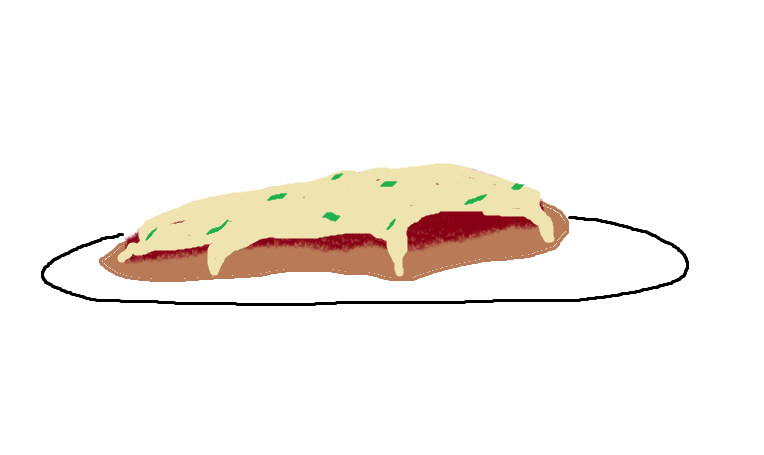

Home
Chicken Parmesan

Description
Chicken Parmesan is a wonderful breaded chicken recipe topped with a red sauce and cheese. Kind of like a chicken pizza, it is warm, indulgent, and fairly simple to make.
Ingredients
- 4 skinless, boneless chicken breast halves
- salt and ground black pepper to taste
- 2 large eggs
- 1 cup panko bread crumbs, use more as needed
- 3/4 cup grated Parmesan cheese
- 2 tablespoons all-purpose flour, use more as needed
- 1/2 cup olive oil for frying, or as needed
- 1/2 cup tomato sauce
- 1/2 cup fresh cubed mozzarella
- 1/2 cup grated provolone cheese
- 1/4 cup chopped fresh basil
- 2 teaspoons olive oil
Steps
- Preheat your oven to 450 degrees F (230 degrees C)
- Place chicken breasts inside a resealable plastic bag on a level surface. Firmly pound chicken with a smooth meat mallet until it is 1/2 inch thick.
- Season chicken with salt and pepper. Evenly coat both sides of the chicken breasts with sifted flour.
- Beat eggs in a shallow bowl. Mix panko and 1/2 cup parmesan cheese in a separate bowl. Dip seasoned chicken in the eggs, and then transfer the breast to the bread crumbs, coating both sides. Repeat for all chicken breasts. Let chicken rest for 10-15 minutes.
- Heat 1/2 inch olive oil in a large skillet on medium-high heat until it simmers. Cook chicken for about 2 minutes on each side, until golden brown. Cooking will finish in the oven.
- Transfer chicken to a wide baking dish and top with tomato sauce. Layer equal amounts of mozzarella and provolone cheese on top. Sprinkle basil and parmesan cheese on top. Drizzle with olive oil.
- Bake in preheated oven until chicken is fully cooked and cheese is brown and bubbly, about 15-20 minutes. A kitchen thermometer should read at least 165 degrees F (74 degrees C) when inserted into the center of the chicken breasts.
Recipe ingredients and steps sourced from Allrecipes